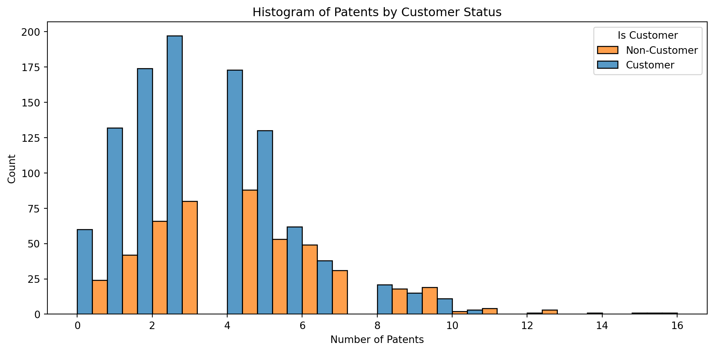
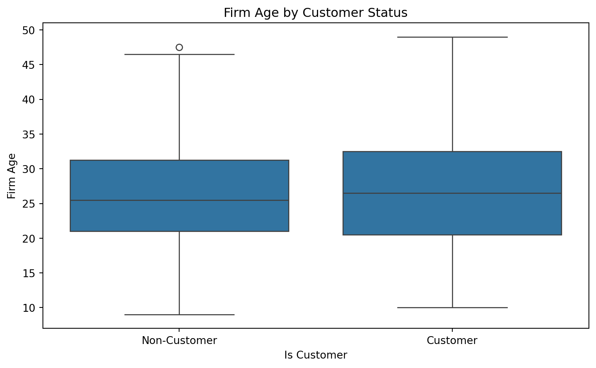
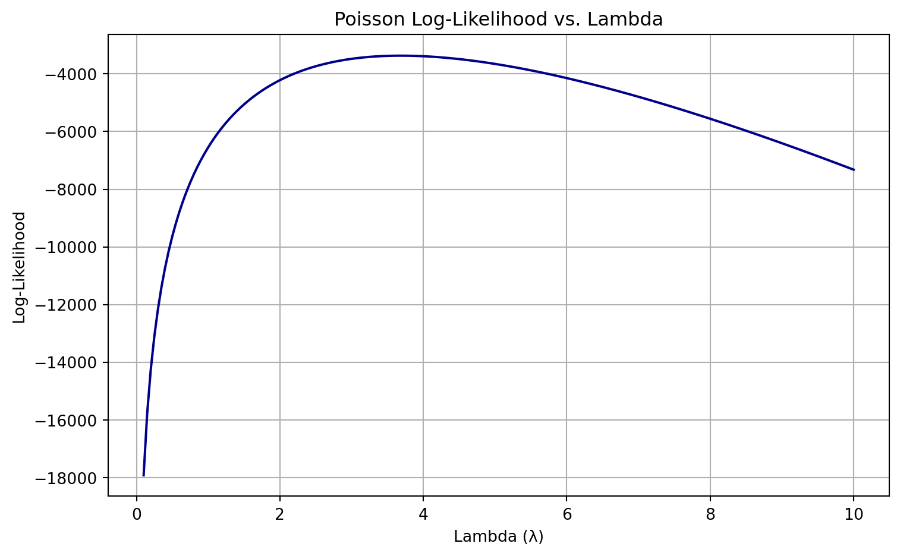

import pandas as pd
blueprinty = pd.read_csv('blueprinty.csv')
blueprinty.head()| patents | region | age | iscustomer | |
|---|---|---|---|---|
| 0 | 0 | Midwest | 32.5 | 0 |
| 1 | 3 | Southwest | 37.5 | 0 |
| 2 | 4 | Northwest | 27.0 | 1 |
| 3 | 3 | Northeast | 24.5 | 0 |
| 4 | 3 | Southwest | 37.0 | 0 |
Sara Antentas Oliveras
May 6, 2025
Blueprinty is a small firm that makes software for developing blueprints specifically for submitting patent applications to the US patent office. Their marketing team would like to make the claim that patent applicants using Blueprinty’s software are more successful in getting their patent applications approved. Ideal data to study such an effect might include the success rate of patent applications before using Blueprinty’s software and after using it. Unfortunately, such data is not available.
However, Blueprinty has collected data on 1,500 mature (non-startup) engineering firms. The data include each firm’s number of patents awarded over the last 5 years, regional location, age since incorporation, and whether or not the firm uses Blueprinty’s software. The marketing team would like to use this data to make the claim that firms using Blueprinty’s software are more successful in getting their patent applications approved.
We compare the number of patents held by firms that are Blueprinty customers vs. non-customers.
| patents | region | age | iscustomer | |
|---|---|---|---|---|
| 0 | 0 | Midwest | 32.5 | 0 |
| 1 | 3 | Southwest | 37.5 | 0 |
| 2 | 4 | Northwest | 27.0 | 1 |
| 3 | 3 | Northeast | 24.5 | 0 |
| 4 | 3 | Southwest | 37.0 | 0 |
The following histogram shows that Blueprinty customers (orange bars) tend to have slightly more patents than non-customers. The distribution is right-skewed for both groups, but the customer group has more firms with 5+ patents. Additionally, the mean number of patents for non-customers is 3.47 and for customers is 4.13.
import matplotlib.pyplot as plt
import seaborn as sns
# Compute mean number of patents by customer status
mean_patents = blueprinty.groupby("iscustomer")["patents"].mean()
# Plot histogram of number of patents by customer status
plt.figure(figsize=(10, 5))
sns.histplot(data=blueprinty, x="patents", hue="iscustomer", multiple="dodge", bins=20)
plt.title("Histogram of Patents by Customer Status")
plt.xlabel("Number of Patents")
plt.ylabel("Count")
plt.legend(title="Is Customer", labels=["Non-Customer", "Customer"])
plt.tight_layout()
mean_patentsiscustomer
0 3.473013
1 4.133056
Name: patents, dtype: float64
Observation: There is a moderate difference in average patent count between customers and non-customers. This suggests that Blueprinty customers may be more successful in generating patents — though this raw difference may reflect underlying differences (e.g. age, region), not necessarily a causal effect of using the software.
For this reason, since Blueprinty customers are not selected at random, it may be important to account for systematic differences in the age and regional location of customers vs non-customers.
# Boxplot for firm age by customer status
plt.figure(figsize=(8, 5))
sns.boxplot(x="iscustomer", y="age", data=blueprinty)
plt.title("Firm Age by Customer Status")
plt.xlabel("Is Customer")
plt.ylabel("Firm Age")
plt.xticks([0, 1], ["Non-Customer", "Customer"])
plt.tight_layout()
# Crosstab for region by customer status
region_customer_crosstab = pd.crosstab(blueprinty["region"], blueprinty["iscustomer"], normalize='index') * 100
region_customer_crosstab.round(1)| iscustomer | 0 | 1 |
|---|---|---|
| region | ||
| Midwest | 83.5 | 16.5 |
| Northeast | 45.4 | 54.6 |
| Northwest | 84.5 | 15.5 |
| South | 81.7 | 18.3 |
| Southwest | 82.5 | 17.5 |

After comparing regions and ages by customer status, we can see that, for the firm age, the boxplot shows that Blueprinty customers and non-customers have similar age distributions. However, customers have a slightly higher median age, and both groups show wide variation, with some firms as old as ~50 years. The overall distributions are fairly overlapping.
On the other hand, there are large differences in the regional distribution. Northeast has the highest customer share (54.6% of firms in this region are customers). In contrast, in regions like Midwest, Northwest, South, and Southwest, only ~15–18% of firms are customers.
Observations: There is non-random customer selection: - Age is fairly balanced but might still matter. - Region is clearly associated with customer status, and firms in the Northeast are far more likely to be Blueprinty customers.
Since our outcome variable of interest can only be small integer values per a set unit of time, we can use a Poisson density to model the number of patents awarded to each engineering firm over the last 5 years. We start by estimating a simple Poisson model via Maximum Likelihood.
We assume that each observation \(Y_i\) follows a Poisson distribution:
\[ Y_i \sim \text{Poisson}(\lambda) \]
This means the probability mass function is:
\[ f(Y_i \mid \lambda) = \frac{e^{-\lambda} \lambda^{Y_i}}{Y_i!} \]
Assuming the \(Y_i\) are i.i.d., the likelihood function is:
\[ \mathcal{L}(\lambda) = \prod_{i=1}^n \frac{e^{-\lambda} \lambda^{y_i}}{y_i!} \]
Taking the natural logarithm of the likelihood, we obtain the log-likelihood function:
\[ \ell(\lambda) = \log \mathcal{L}(\lambda) = \sum_{i=1}^n \left[ y_i \log(\lambda) - \lambda - \log(y_i!) \right] \]
Next, we define the log-likelihood for the Poisson distribution as a function of a single parameter, \(\lambda\), and the observed data, \(Y\). This function is maximized to estimate the most likely value of \(\lambda\) that could have generated the data:
We then evaluate this function over a range of candidate values for \(\lambda\), using the observed number of patents in the dataset. This helps us visually identify the value of \(\lambda\) that maximizes the log-likelihood:
Y = blueprinty["patents"].values
lambda_vals = np.linspace(0.1, 10, 200)
loglik_vals = [poisson_loglikelihood(lmb, Y) for lmb in lambda_vals]
plt.figure(figsize=(8, 5))
plt.plot(lambda_vals, loglik_vals, color='darkblue')
plt.title("Poisson Log-Likelihood vs. Lambda")
plt.xlabel("Lambda (λ)")
plt.ylabel("Log-Likelihood")
plt.grid(True)
plt.tight_layout()
plt.show()
This plot reveals a clear peak in the log-likelihood function, indicating the most likely value of \(\lambda\) given the observed number of patents. The shape confirms that the log-likelihood is concave, making optimization straightforward.
To confirm our visual result mathematically, we take the derivative of the log-likelihood function and solve for the value of \(\lambda\) that maximizes it.
Starting from the log-likelihood:
\[ \ell(\lambda) = \sum_{i=1}^n \left[ y_i \log(\lambda) - \lambda - \log(y_i!) \right] \]
Take the derivative with respect to \(\lambda\):
\[ \frac{d\ell}{d\lambda} = \frac{1}{\lambda} \sum_{i=1}^n y_i - n \]
Set the derivative to zero and solve:
\[ \begin{gather*} \frac{1}{\lambda} \sum_{i=1}^n y_i - n = 0 \\ \sum_{i=1}^n y_i = n \lambda \\ \hat{\lambda}_{\text{MLE}} = \frac{1}{n} \sum_{i=1}^n y_i = \bar{y} \end{gather*} \]
Conclusion: The MLE for \(\lambda\) is simply the sample mean of the observed counts (\(\hat{\lambda}_{\text{MLE}} = \bar{y}\)). This aligns with our numerical result and reinforces the interpretation of \(\lambda\) as the expected number of events (in this case, patents per firm).
Finally, using scipy.optimize.minimize(), we numerically maximized the Poisson log-likelihood and obtained:
\[ \hat{\lambda}_{\text{MLE}} = 3.685 \]
This matches the sample mean of the observed patent counts, which aligns with our analytical derivation. The optimizer successfully found the value of \(\lambda\) that maximizes the likelihood of observing the data under a Poisson model.
from scipy.optimize import minimize
# Define the negative log-likelihood for use with optimizer
def neg_poisson_loglikelihood(lmbda, Y):
if lmbda <= 0:
return np.inf
return -poisson_loglikelihood(lmbda, Y)
# Use the same Y from earlier
Y = blueprinty["patents"].values
# Use scipy to minimize the negative log-likelihood
result = minimize(fun=neg_poisson_loglikelihood, x0=[1.0], args=(Y,), bounds=[(1e-6, None)])
lambda_mle = result.x[0]
lambda_mle3.6846667021660804Next, we extend our simple Poisson model to a Poisson Regression Model such that \(Y_i = \text{Poisson}(\lambda_i)\) where \(\lambda_i = \exp(X_i'\beta)\). The interpretation is that the success rate of patent awards is not constant across all firms (\(\lambda\)) but rather is a function of firm characteristics \(X_i\). Specifically, we will use the covariates age, age squared, region, and whether the firm is a customer of Blueprinty.
We now extend our Poisson likelihood to a regression setting, where the rate parameter \(\lambda_i\) varies across observations. Specifically, we assume:
\[ \lambda_i = \exp(X_i' \beta) \]
This ensures \(\lambda_i > 0\), as required by the Poisson distribution. The log-likelihood function becomes:
\[ \ell(\beta) = \sum_{i=1}^n \left[ y_i (X_i' \beta) - \exp(X_i' \beta) - \log(y_i!) \right] \]
We implement this in Python by defining a function that takes the coefficient vector \(\beta\), the observed count data \(Y\), and the covariate matrix \(X\):
To estimate the Poisson regression model, we use Maximum Likelihood Estimation (MLE) via Python’s scipy.optimize.minimize() function. The goal is to obtain the MLE vector \(\hat{\beta}\) and compute the standard errors using the inverse of the Hessian matrix. We construct the covariate matrix \(X\) as follows:
import patsy
# Create design matrix with intercept, age, age², region dummies, and customer
y, X = patsy.dmatrices('patents ~ age + I(age**2) + C(region) + iscustomer', data=blueprinty, return_type='dataframe')
Y = y.values.flatten() # Convert y to 1D
# Initial guess for beta
beta0 = np.zeros(X.shape[1])
# Optimize the likelihood
result = minimize(poisson_regression_loglik, beta0, args=(Y, X), method='BFGS')
# Extract MLE estimates and standard errors
beta_hat = result.x
hessian_inv = result.hess_inv
standard_errors = np.sqrt(np.diag(hessian_inv))
# Present results in table
results_df = pd.DataFrame({
"Coefficient": beta_hat,
"Std. Error": standard_errors
}, index=X.columns)
results_df.round(4)| Coefficient | Std. Error | |
|---|---|---|
| Intercept | -0.5100 | 0.1931 |
| C(region)[T.Northeast] | 0.0292 | 0.0468 |
| C(region)[T.Northwest] | -0.0176 | 0.0572 |
| C(region)[T.South] | 0.0566 | 0.0562 |
| C(region)[T.Southwest] | 0.0506 | 0.0497 |
| age | 0.1487 | 0.0145 |
| I(age ** 2) | -0.0030 | 0.0003 |
| iscustomer | 0.2076 | 0.0329 |
By including the intercept and relevant covariates in our design matrix and maximizing the log-likelihood using numerical optimization, we obtain statistically valid parameter estimates. These results allow us to rigorously assess the effect of Blueprinty’s software (and other variables) on the number of patents.
To verify the correctness of our manually optimized Poisson regression, we re-estimate the model using Python’s built-in Generalized Linear Model (GLM) implementation from the statsmodels package.
This model also uses the Poisson family with a log link, which matches the specification of our manual log-likelihood.
import statsmodels.api as sm
# Fit Poisson GLM with log link
glm_model = sm.GLM(Y, X, family=sm.families.Poisson())
glm_results = glm_model.fit()
# Display summary table
print(glm_results.summary()) Generalized Linear Model Regression Results
==============================================================================
Dep. Variable: y No. Observations: 1500
Model: GLM Df Residuals: 1492
Model Family: Poisson Df Model: 7
Link Function: Log Scale: 1.0000
Method: IRLS Log-Likelihood: -3258.1
Date: Tue, 06 May 2025 Deviance: 2143.3
Time: 21:35:46 Pearson chi2: 2.07e+03
No. Iterations: 5 Pseudo R-squ. (CS): 0.1360
Covariance Type: nonrobust
==========================================================================================
coef std err z P>|z| [0.025 0.975]
------------------------------------------------------------------------------------------
Intercept -0.5089 0.183 -2.778 0.005 -0.868 -0.150
C(region)[T.Northeast] 0.0292 0.044 0.669 0.504 -0.056 0.115
C(region)[T.Northwest] -0.0176 0.054 -0.327 0.744 -0.123 0.088
C(region)[T.South] 0.0566 0.053 1.074 0.283 -0.047 0.160
C(region)[T.Southwest] 0.0506 0.047 1.072 0.284 -0.042 0.143
age 0.1486 0.014 10.716 0.000 0.121 0.176
I(age ** 2) -0.0030 0.000 -11.513 0.000 -0.003 -0.002
iscustomer 0.2076 0.031 6.719 0.000 0.147 0.268
==========================================================================================Interpreting the Poisson Regression Results:
From the comparison between our custom MLE output and statsmodels.GLM, we observe nearly identical coefficient estimates and standard errors, confirming that our implementation is correct.
The most notable results include:
iscustomer:
age:
age ** 2:
Region Dummie:
To summarize, the model provides strong evidence that Blueprinty’s software is associated with higher patent productivity. Also, the quadratic form of age shows that patent output rises with experience, but not indefinitely. Regional effects are minimal once other variables are included. These insights can help Blueprinty support its value proposition and target more impactful segments.
Because the coefficient from a Poisson regression model is not directly interpretable as a marginal effect, we estimate the effect of Blueprinty’s software by comparing counterfactual predictions.
To do so, we create two hypothetical versions of the dataset:
iscustomer = 0 (non-users)iscustomer = 1 (Blueprinty users)Using our fitted model, we compute the expected number of patents under both scenarios:
X_0 = X.copy()
X_1 = X.copy()
X_0["iscustomer"] = 0
X_1["iscustomer"] = 1
# Predict expected number of patents under both scenarios
y_pred_0 = np.exp(X_0 @ beta_hat)
y_pred_1 = np.exp(X_1 @ beta_hat)
# Compute difference and average effect
diff = y_pred_1 - y_pred_0
average_effect = diff.mean()
print(f"Average treatment effect of Blueprinty's software: {average_effect:.4f} additional patents")Average treatment effect of Blueprinty's software: 0.7928 additional patentsThe estimated average treatment effect of Blueprinty’s software is 0.7928. This means that, on average, firms using Blueprinty’s software are predicted to obtain approximately 0.79 more patents over the 5-year period, holding all other firm characteristics constant.
We conclude that Blueprinty’s software is associated with a positive and meaningful increase in patent success:
AirBnB is a popular platform for booking short-term rentals. In March 2017, students Annika Awad, Evan Lebo, and Anna Linden scraped of 40,000 Airbnb listings from New York City. The data include the following variables:
- `id` = unique ID number for each unit
- `last_scraped` = date when information scraped
- `host_since` = date when host first listed the unit on Airbnb
- `days` = `last_scraped` - `host_since` = number of days the unit has been listed
- `room_type` = Entire home/apt., Private room, or Shared room
- `bathrooms` = number of bathrooms
- `bedrooms` = number of bedrooms
- `price` = price per night (dollars)
- `number_of_reviews` = number of reviews for the unit on Airbnb
- `review_scores_cleanliness` = a cleanliness score from reviews (1-10)
- `review_scores_location` = a "quality of location" score from reviews (1-10)
- `review_scores_value` = a "quality of value" score from reviews (1-10)
- `instant_bookable` = "t" if instantly bookable, "f" if notIn this case study, we assume the number of reviews is a good proxy for the number of bookings, and we model the number of reviews using listing characteristics.
We began by exploring the dataset and found several variables with missing values. To ensure a reliable analysis, we dropped rows missing any of the following variables:
bathroomsbedroomsreview_scores_cleanlinessreview_scores_locationreview_scores_valueWe also converted categorical variables:
room_type: one-hot encoded with Entire home/apt as the baseline.instant_bookable: mapped “t” to 1 and “f” to 0.import pandas as pd
airbnb = pd.read_csv('airbnb.csv')
# Drop rows with missing values in key predictors
airbnb_clean = airbnb.dropna(subset=[
"bathrooms",
"bedrooms",
"review_scores_cleanliness",
"review_scores_location",
"review_scores_value"
])
# Convert categorical variables
airbnb_clean["instant_bookable"] = airbnb_clean["instant_bookable"].map({"t": 1, "f": 0})
# One-hot encode room_type, drop one category to avoid multicollinearity
room_dummies = pd.get_dummies(airbnb_clean["room_type"], prefix="room", drop_first=True)
# Construct design matrix
X = pd.concat([
airbnb_clean[[
"price",
"bedrooms",
"bathrooms",
"review_scores_cleanliness",
"review_scores_location",
"review_scores_value",
"instant_bookable"
]],
room_dummies
], axis=1)
# Add intercept manually
X.insert(0, "intercept", 1)
# Define target variable
Y = airbnb_clean["number_of_reviews"].values/tmp/ipykernel_80317/2696647610.py:14: SettingWithCopyWarning:
A value is trying to be set on a copy of a slice from a DataFrame.
Try using .loc[row_indexer,col_indexer] = value instead
See the caveats in the documentation: https://pandas.pydata.org/pandas-docs/stable/user_guide/indexing.html#returning-a-view-versus-a-copy
We modeled the number of reviews using a Poisson regression, where:
\[ Y_i \sim \text{Poisson}(\lambda_i), \quad \text{where} \quad \lambda_i = \exp(X_i' \beta) \]
The predictor variables \(X_i\) include:
price, bedrooms, bathroomsreview_scores_cleanliness, review_scores_location, review_scores_valueroom_type dummiesinstant_bookableimport statsmodels.api as sm
# Ensure all columns in X are numeric
X = X.astype(float)
# Fit the Poisson regression model
poisson_model = sm.GLM(Y, X, family=sm.families.Poisson())
poisson_results = poisson_model.fit()
# View the results
print(poisson_results.summary()) Generalized Linear Model Regression Results
==============================================================================
Dep. Variable: y No. Observations: 30160
Model: GLM Df Residuals: 30150
Model Family: Poisson Df Model: 9
Link Function: Log Scale: 1.0000
Method: IRLS Log-Likelihood: -5.2900e+05
Date: Tue, 06 May 2025 Deviance: 9.3653e+05
Time: 21:35:47 Pearson chi2: 1.41e+06
No. Iterations: 6 Pseudo R-squ. (CS): 0.5649
Covariance Type: nonrobust
=============================================================================================
coef std err z P>|z| [0.025 0.975]
---------------------------------------------------------------------------------------------
intercept 3.5725 0.016 223.215 0.000 3.541 3.604
price -1.435e-05 8.3e-06 -1.729 0.084 -3.06e-05 1.92e-06
bedrooms 0.0749 0.002 37.698 0.000 0.071 0.079
bathrooms -0.1240 0.004 -33.091 0.000 -0.131 -0.117
review_scores_cleanliness 0.1132 0.001 75.820 0.000 0.110 0.116
review_scores_location -0.0768 0.002 -47.796 0.000 -0.080 -0.074
review_scores_value -0.0915 0.002 -50.902 0.000 -0.095 -0.088
instant_bookable 0.3344 0.003 115.748 0.000 0.329 0.340
room_Private room -0.0145 0.003 -5.310 0.000 -0.020 -0.009
room_Shared room -0.2519 0.009 -29.229 0.000 -0.269 -0.235
=============================================================================================We estimated a Poisson regression model to understand how listing features are associated with the number of reviews (used here as a proxy for bookings). Coefficients are interpreted on a log scale, so we exponentiate them to obtain multiplicative effects on the expected count.
Coefficient Interpretation:
intercept:
price:
bedrooms:
bathrooms:
review_scores_cleanliness:
review_scores_location:
review_scores_value:
instant_bookable:
room_Private room (vs. entire home):
room_Shared room (vs. entire home):
Our findings suggest that: